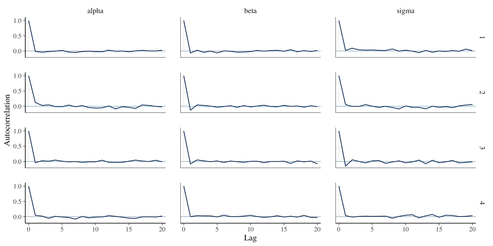
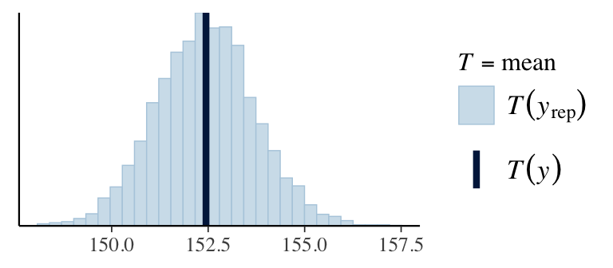
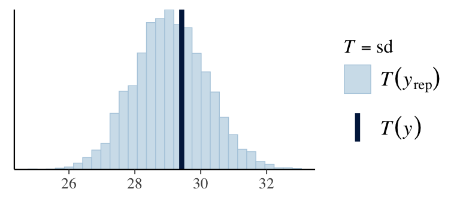

Today we will talk about a general strategy for taking a question and data to a robust conclusion.
A simplified workflow
Setting up a full probability model: a joint probability distribution for all observable and unobservable quantities in a problem. The model should be consistent with knowledge about the underlying scientific problem and the data collection process.
Conditioning on observed data: calculating and interpreting the appropriate posterior distribution — the conditional probability distribution of the unobserved quantities of ultimate interest, given the observed data.
Evaluating the fit of the model and the implications of the resulting posterior distribution: how well does the model fit the data, are the substantive conclusions reasonable, and how sensitive are the results to the modeling assumptions in step 1? In response, one can alter or expand the model and repeat the three steps.
Compare models: Iterate on model design and choose a model.
Motivating example: predicting weight from height
Research question: We would like to understand the relationship between a person’s height and weight. A few particular questions we have are:
How much does a person’s weight increase when their height increases?
How certain we can be about the magnitude of the increase?
Can we predict a person’s weight based on their height?
Data: We will use the bdims dataset from the openintro package. This dataset contains body girth measurements and skeletal diameter measurements, as well as age, weight, height and gender.
weight height sex
1 144.6231 68.50397 Male
2 158.2917 69.01579 Male
3 177.9128 76.18114 Male
4 160.0554 73.42524 Male
5 173.7241 73.70083 Male
6 164.9056 71.45673 Male
1. Research question:
1. Research question:
1. Research question:
2. Specify likelihood & priors:
Construct a data generating process.
We would like to model weight as a function of height using a linear regression model.
Define, \(Y_i\) as the weight of observation \(i\) and \(\mathbf{x}_i\) as a vector of covariates (here only height).
The half-normal is a useful prior for nonnegative parameters that should not be too large and may be very close to zero.
Similar distributions for scale parameters are half-t and half-Cauchy priors, these have heavier tales.
3. Check the model with simulated data:
Draw parameter values from priors.
Generate data based on those parameter values.
Check simulated data summaries and compare to observed data.
3. Check the model with simulated data:
// stored in workflow_prior_pred_check.standata {int<lower = 1> n;int<lower = 1> p;real Y_bar;matrix[n, p] X;real<lower = 0> sigma_alpha;real<lower = 0> sigma_beta;real<lower = 0> sigma_sigma;}transformed data {row_vector[p] X_bar;for (i in1:p) X_bar[i] = mean(X[, i]);}generated quantities {// Sample from the priorsreal alpha_star = normal_rng(0, sigma_alpha);real alpha_plus = alpha_star + Y_bar;real alpha = alpha_plus - X_bar * beta;vector[p] beta;for (i in1:p) beta[i] = normal_rng(0, sigma_beta);real sigma = fabs(normal_rng(0, sigma_sigma));// Simulate data from the priorvector[n] Y;for (i in1:n) { Y[i] = normal_rng(alpha + X[i, ] * beta, sigma); }// Compute summaries from the priorreal Y_min = min(Y);real Y_max = max(Y);real Y_mean = mean(Y);}
3. Check the model with simulated data:
###Compile the Stan codeprior_check <-stan_model(file ="workflow_prior_pred_check.stan")###Define the Stan data objectY <- dat$weightX <-matrix(dat$height)stan_data <-list(n =nrow(dat), p =ncol(X),Y_bar =mean(Y),X = X,sigma_alpha =10,sigma_beta =10,sigma_sigma =10)###Simulate data from the priorprior_check1 <-sampling(prior_check, data = stan_data, algorithm ="Fixed_param", chains =1, iter =1000)
3. Check the model with simulated data:

3. Check the model with simulated data:
###Compile the Stan codeprior_check <-stan_model(file ="workflow_prior_pred_check.stan")###Define the Stan data objectY <- dat$weightX <-matrix(dat$height)stan_data <-list(n =nrow(dat), p =ncol(X),Y_bar =mean(Y),X = X,sigma_alpha =10,sigma_beta =5,sigma_sigma =4)###Simulate data from the priorprior_check2 <-sampling(prior_check, data = stan_data, algorithm ="Fixed_param", chains =1, iter =1000)
3. Check the model with simulated data:
4. Fit the model to real data:
// saved in linear_regression_workflow.standata {int<lower = 1> n; // number of observationsint<lower = 1> p; // number of covariates (excluding intercept)vector[n] Y; // outcome vectormatrix[n, p] X; // covariate matrixint<lower = 1> n_pred; // number of new observations to predictmatrix[n_pred, p] X_new; // covariate matrix for new observations}transformed data {vector[n] Y_centered;real Y_bar;matrix[n, p] X_centered;row_vector[p] X_bar;for (i in1:p) { X_bar[i] = mean(X[, i]); X_centered[, i] = X[, i] - X_bar[i]; } Y_bar = mean(Y); Y_centered = Y - Y_bar;}parameters {real alpha_star;vector[p] beta;real<lower = 0> sigma;}model {target += normal_lpdf(Y_centered | alpha_star + X_centered * beta, sigma); // likelihoodtarget += normal_lpdf(alpha_star | 0, 10);target += normal_lpdf(beta | 0, 5);target += normal_lpdf(sigma | 0, 4);}generated quantities {vector[n] Y_pred;vector[n] log_lik;vector[n_pred] Y_new;real alpha = Y_bar + alpha_star - X_bar * beta;for (i in1:n) { Y_pred[i] = normal_rng(alpha + X[i, ] * beta, sigma); log_lik[i] = normal_lpdf(Y_centered[i] | alpha_star + X_centered[i, ] * beta, sigma); }for (i in1:n_pred) Y_new[i] = normal_rng(alpha + X_new[i, ] * beta, sigma);}
###Fit the modelfit_workflow <-sampling(regression_model, data = stan_data)print(fit_workflow)
Inference for Stan model: anon_model.
4 chains, each with iter=2000; warmup=1000; thin=1;
post-warmup draws per chain=1000, total post-warmup draws=4000.
mean se_mean sd 2.5% 50% 97.5% n_eff Rhat
alpha -230.32 0.25 16.71 -263.60 -230.48 -198.47 4349 1
beta[1] 5.68 0.00 0.25 5.20 5.68 6.17 4367 1
sigma 20.09 0.01 0.61 18.93 20.07 21.32 4148 1
Samples were drawn using NUTS(diag_e) at Mon Feb 3 13:39:30 2025.
For each parameter, n_eff is a crude measure of effective sample size,
and Rhat is the potential scale reduction factor on split chains (at
convergence, Rhat=1).
5. Check diagnostics:
rstan::traceplot(fit_workflow, pars =c("alpha", "beta", "sigma"))
Regression line corresponds to posterior mean and 95% credible interval for \(\mu = \alpha + \mathbf{x}_i \boldsymbol{\beta}\).
7.Check predictions:
Y_pred <- rstan::extract(fit_workflow, pars ="Y_pred")$Y_predppc_dens_overlay(Y, Y_pred[1:100, ])
7. Check predictions:
ppc_stat(Y, Y_pred, stat ="mean") # from bayesplotppc_stat(Y, Y_pred, stat ="sd")q025 <-function(y) quantile(y, 0.025)q975 <-function(y) quantile(y, 0.975)ppc_stat(Y, Y_pred, stat ="q025")ppc_stat(Y, Y_pred, stat ="q975")


7. Check predictions:
Regression line corresponds to posterior predictive distribution mean and 95% credible interval, \(f(Y_{i'} | Y_1,\ldots,Y_n)\).
shinystan
library(shinystan)Y <- dat$weight # need to define outcome as a global variable to be accessiblesso <- shinystan::launch_shinystan(fit_workflow)
8. Compare models
Suppose we would like to compare our original model with models that also includes sex and an interaction between sex and height.